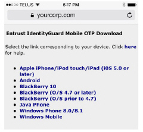

|
IdentityGuard Server 12.0 Administration Guide |
|
IdentityGuard Server 12.0 Administration Guide |
Entrust IdentityGuard Self-Service Module includes a Web site from which to download the Entrust IdentityGuard Mobile ST app and Entrust IdentityGuard Desktop Soft Token, Entrust’s soft token applications.
The following figure shows a sample download page for the Entrust IdentityGuard Mobile ST app.

For some mobile device types, (for example, iPhone, iPod Touch, and iPad) the link directs users to the appropriate mobile device app store. For others, it offers the choice of downloading from their device’s app store (Google Play, BlackBerry World) or from the Entrust download site.
Having users download the app from the device’s app store is convenient and familiar to users, and provides the added benefit of having the vendor’s app store notify users when app updates are available. For most other download methods, you must explicitly inform users when app updates are available.
If you do not have Self-Service module and you choose to have users download the soft token application from your site, the software packages for both the Entrust IdentityGuard Mobile ST app (for Android, BlackBerry, and Java Phones) and Entrust IdentityGuard Desktop Soft Token (for Windows and Mac) are available for download on the Entrust TrustedCare Web site at https://secure.entrust.com/trustedcare/ or at http://www.entrust.com/mobile/info/download.php.
You can distribute the software in any way you like, for example, by pushing it out through the BlackBerry Enterprise Server (BES)
For details, see the Entrust IdentityGuard Self-Service Module Installation and Configuration Guide.